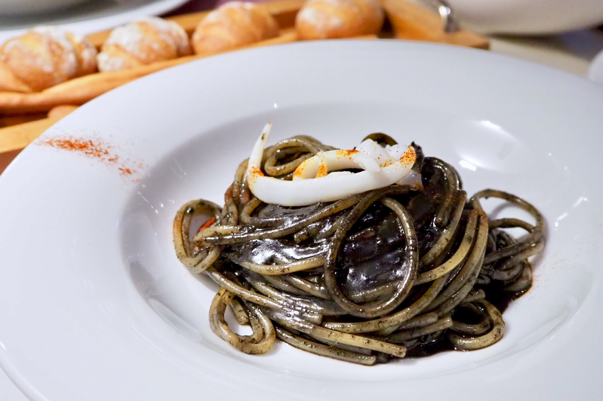
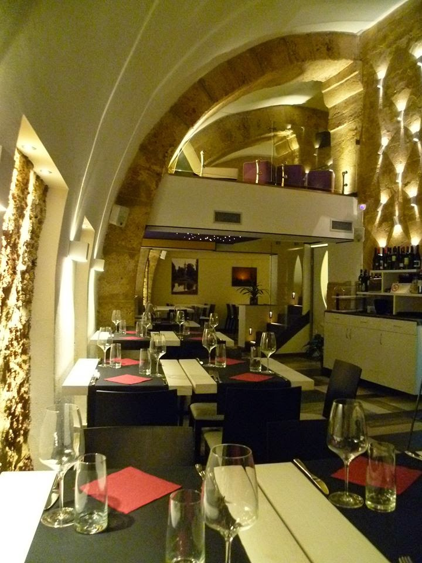
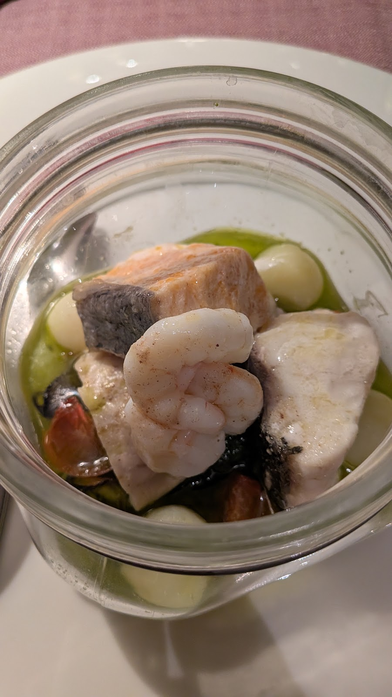
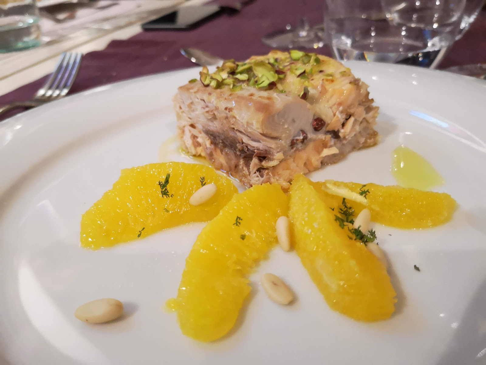
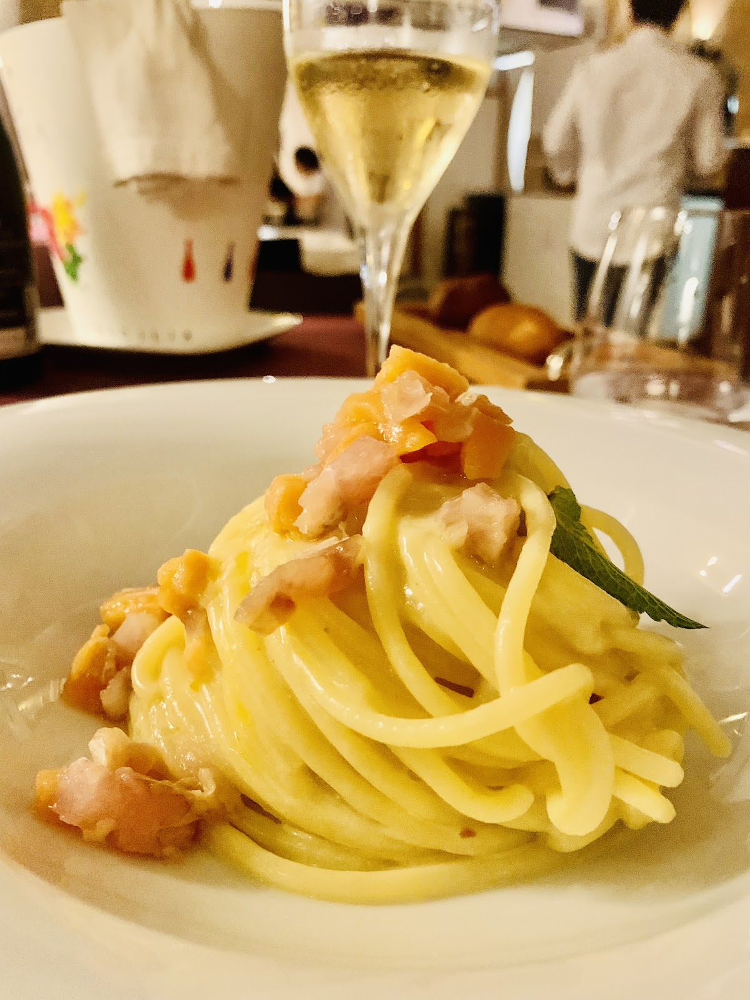
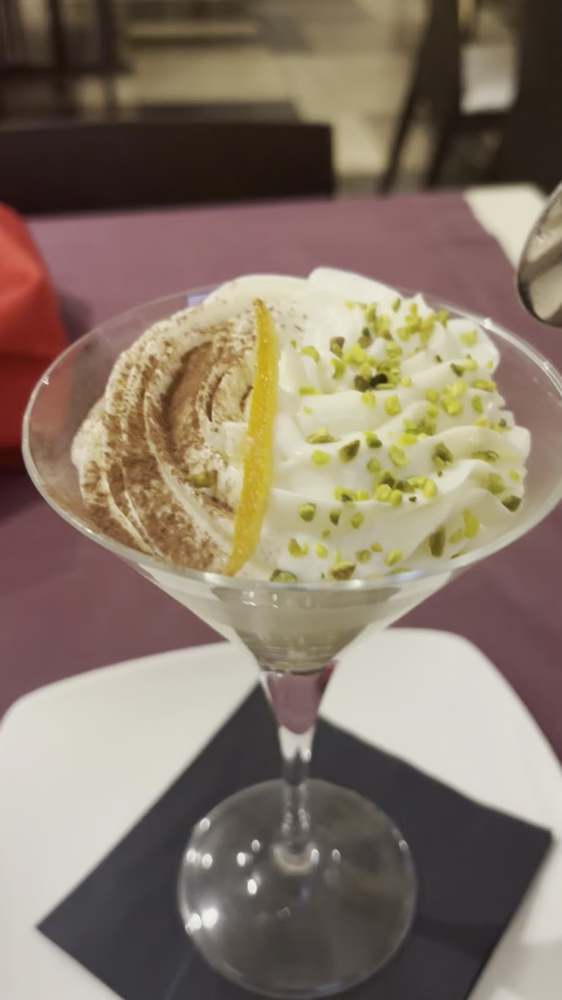
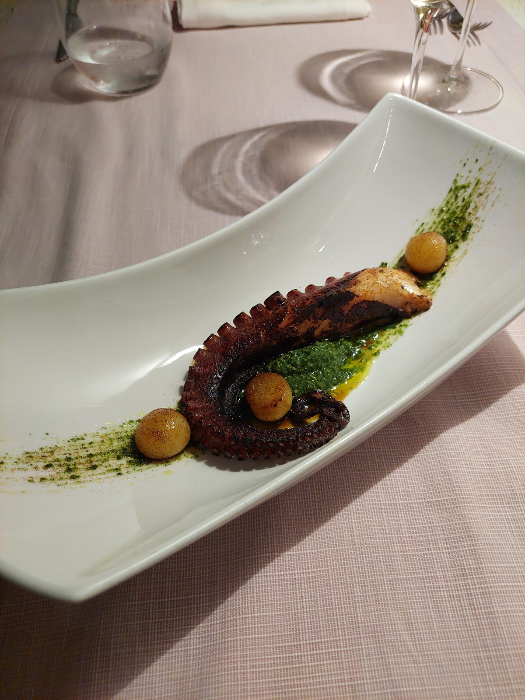
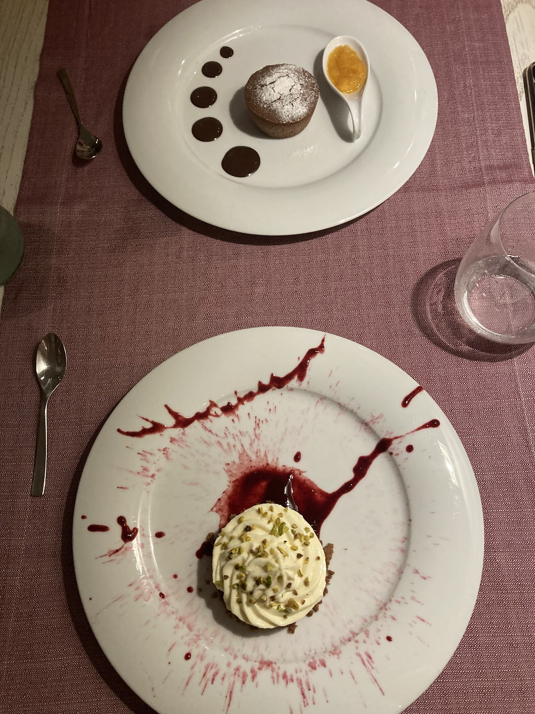
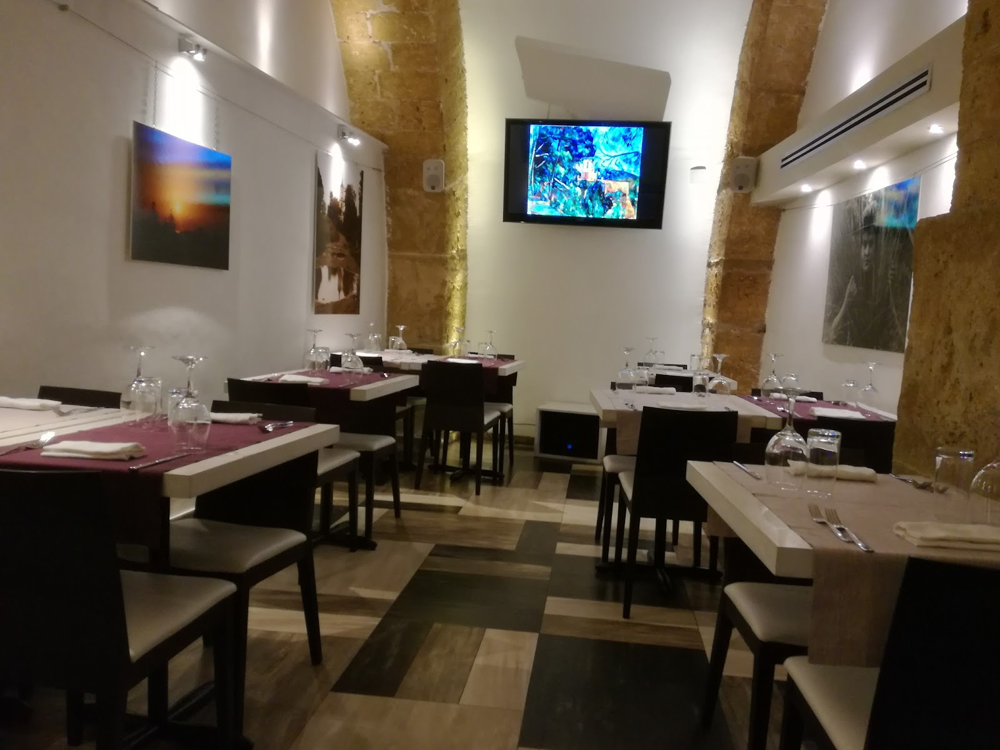
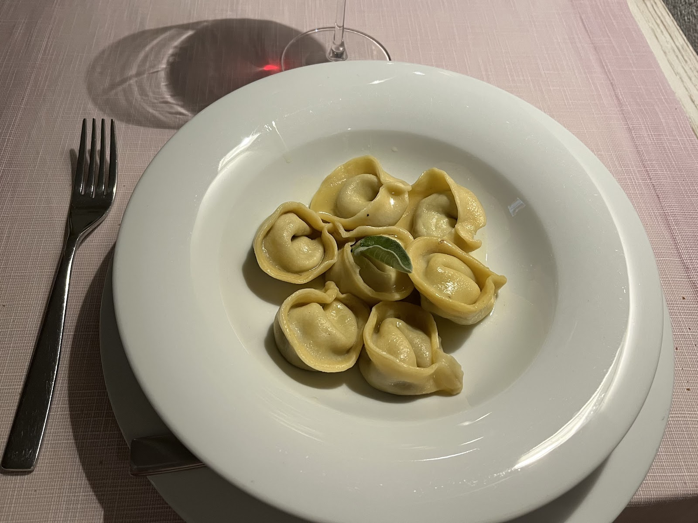

"Carezze d'amore", in siciliano — il ristorante dei tre fratelli, aperto solo a cena. "Caresses of love", in Sicilian — three brothers, dinner only.



« Tri frati, na cucina, un sulu amuri. » — tre fratelli, una cucina, un solo amore.
Sotto gli archi in pietra di Via Lungarini, tre fratelli hanno trasformato il nome siciliano delle carezze in un modo di cucinare: pochi tavoli, ingredienti freschissimi e piatti che escono quando sono pronti — mai prima.
Under the stone arches of Via Lungarini, three brothers turned the Sicilian word for caresses into a way of cooking: few tables, the freshest ingredients, and dishes that leave the kitchen only when they're ready.
Su Google li chiamano "Giacomo's table" — e chi ci cena una volta, torna da amico.


Pesce misto in vaso cottura, perle di patate, pomodorini e pesto — 27 €

Con radicchio, funghi, porro e gorgonzola — 19 €

Agli agrumi di Sicilia — 19 €



"We had a wonderful evening at Giacomo's table with his brothers: fresh ingredients, beautifully prepared!"
"Beautiful food, wines and service, all for a reasonable price. Lovely owner and kind staff — a calm oasis in a busy area."
"Run by three brothers with a strong passion for food and a love of inviting their 'new friends' to the table."
★ 4,6 / 5 — 547 recensioni su Google
| Mercoledì – LunedìWed – Mon | 19:30 – 23:00 |
| MartedìTuesday | Chiuso · Closed |
Via Lungarini 21, 90133 Palermo — tra la Kalsa e Via Roma
Pochi tavoli: scriveteci su WhatsApp per la vostra sera. Few tables — WhatsApp us for your evening.
💬 WhatsApp 📞 329 134 1439 Apri in Maps